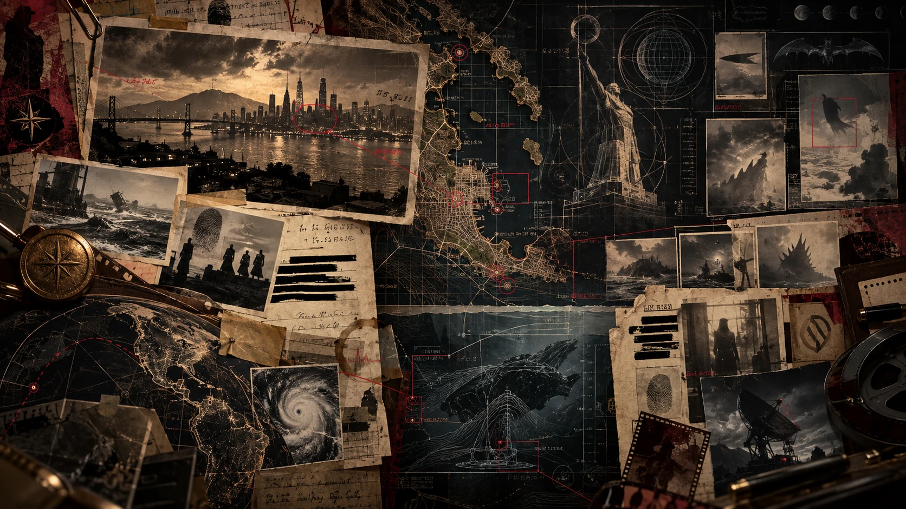

✦ Edição Especial ✦
Fundação 1882 · Cidade Dourada
Nº 145 · Jan/2027
O Farol de Vanguard
"A verdade ilumina a Cidade Dourada"
Dossiê Completo Universo
Digite ao menos 2 caracteres
TERRA Z · NAVEGAÇÃO RÁPIDA
⌘ Central de Comandos
⌕
Ctrl K
Digite para localizar entidades e ações.
TERRA Z · CONTROLE DO MESTRE
⚙️ Administração
Acesso do editor
Entre para administrar conteúdo, personagens, sessões e dados privados.
Backend—
Pendências0
Personagens0
Sessões0
Privados—
Visão geral
Central de Continuidade
Saúde do projeto, privacidade, produção e alterações recentes em um único lugar.
Pronto para verificar o projeto.
Avisos e pendências
- Aguardando verificação.
Alterações recentes
Aguardando histórico.
Conteúdo
Campanha
Backup e manutenção
CONTINUIDADE · VERSIONAMENTO · PRODUÇÃO
🕘 Histórico e Produção
GitHub · Main
—
Carregando…
Vercel · Produção
—
Carregando…
Estado
Verificando…
Verificando política de deploy…
Fluxo oficial: desenvolvimento no GitHub → Quality Gate → checkpoint pelo Terra Z → GitHub Actions → Deploy Hook → Vercel.
A conexão Vercel do ChatGPT é opcional e serve apenas para diagnósticos avançados; não é necessária para publicar.
Checkpoint de produção
Executa Quality Gate → Vercel → smoke test do SHA publicado.
Restauração segura: cria um novo commit com o conteúdo do ponto escolhido.
O código atual não volta para trás e nenhum commit é apagado.
Conteúdo Mestre continua armazenado apenas no envelope criptografado.
CONTROLE DE ACESSO · CAMPANHA
👁️ Público · Spoiler · Mestre
🌐 PúblicoVisível para todos.
⚠️ SpoilerOculto no Modo Jogador, mas continua no bundle público.
🔒 MestreCriptografado e carregado somente após autenticação.
↻ Verificando compatibilidade do backend seguro…
MANUTENÇÃO · DIAGNÓSTICO
🩺 Verificar Terra Z
Verificações OK0
ETAPA 11 · ORGANIZAÇÃO DO UNIVERSO
🏷️ Taxonomias
TodosFiltro fixo
PrincipaisDestaques
FallbacksOutros / Desconhecido protegidos
ETAPA 12 · OPERAÇÕES EM LOTE
🧰 Edição em Lote
Selecione personagens e aplique organização em uma única publicação.
0selecionados
0 visíveis
Alterações
Núcleos
Tags
Personagens Mestre podem receber tipo, status, núcleos, tags e destaque em lote, mas permanecem Mestre. Mudança para/de Mestre continua no editor individual para preservar a migração criptografada.
ETAPA 13 · CONDUÇÃO DA CAMPANHA
🎲 Sala do Mestre
O que merece sua atenção antes e durante a próxima sessão.
🎯 Objetivos ativos0
🧩 Pistas pendentes0
🔮 Revelações planejadas0
👤 NPCs em jogo0
📝 Notas recentes0
📅 Últimos acontecimentos0
ETAPA 14B · MESA DO MESTRE
🎬 Modo Sessão
Rascunho temporário para conduzir a mesa. Nada é publicado até você revisar o registro final.
👥 Personagens em cenaseleção
👤 NPCs em cenaMestre
🎯 Objetivos trabalhadosativos
🧩 Pistas usadasnão altera o cânone
📝 Registro rápidoCtrl+Enter adiciona
TERRA Z v1.4.0 · ETAPA 15
🎲 Modo Mesa
Sessão em andamento
Rascunho temporário
● Online
ETAPA 14C · PORTABILIDADE E SEGURANÇA
🧳 Backup e Exportação
Crie cópias portáteis sem alterar o projeto.
O backup completo não duplica imagens em Base64. Ele registra os caminhos da mídia; os binários continuam preservados no Git/GitHub.
CONTEÚDO PRIVADO · MESTRE
🗝️ Painel do Mestre
🔒 Privado
Novo item
EDITOR TERRA Z
🚀 Publicar alterações
O rascunho continua salvo somente neste navegador até ser publicado. A publicação cria um commit no GitHub e o Terra Z aplica o conteúdo salvo imediatamente; a cópia estática sincroniza em segundo plano.
0alterações pendentes
✅ Editor autenticado nesta sessão
🔐 Conteúdo Mestre privado
Verificando…
A remoção só é permitida quando a cópia privada da Vercel contém exatamente os mesmos segredos que ainda estão públicos.
Verificando configuração…
A credencial de escrita nunca fica neste site. O botão só é ativado quando um endpoint seguro estiver configurado.
✏️ Modo de edição ativo — clique em qualquer texto para editar • Ctrl+S para salvar
✦ Caderno Especial ✦
Bem-vindo à Terra Z
Onde os heróis vão para desaparecer — e os monstros vão para se esconder. Uma realidade alternativa do multiverso DC, onde a nova geração enfrenta os fantasmas de seus pais.
Vanguard Bay · Flórida · Janeiro de 2027

✦ Elenco central
Protagonistas
Os personagens no centro da história de Terra Z. Selecione um card para abrir sua ficha completa.
2.06MHabitantes
7Distritos
145Anos de História
12Personagens-Chave
7Segredos Ativos
2072O Prazo
Última Atualização
Janeiro de 2027
Documento revisado e publicado. Versão 1.3.2.
Próximo Evento
Dinah & Oliver
Investigam a anomalia em Gotham. Ligada à Fenda de Vanguard Bay.
Status da Fenda
⚠ Instável
Energia do Rei Ômega distorce a realidade local. Nível 3 de 5.
Vanguard Bay é a cidade dourada da costa sul da Flórida — uma metrópole dividida entre o brilho dos arranha-céus corporativos e a escuridão do seu porto operário. Fundada em 1882 por Silas Vanguard, a cidade cresceu sobre um pântano drenado, um símbolo de ambição que sempre cobrou seu preço em sangue.
Aqui, os super-heróis não têm uma família como em Gotham ou Metrópolis. Não há um Batman vigiando os telhados, nem um Superman voando sobre os céus. Há apenas um vácuo heroico — e é nesse vácuo que uma nova geração de renegados, fugitivos e filhos esquecidos está tentando sobreviver.
Este documento reúne toda a informação conhecida sobre a cidade: seus distritos, seus mapas, seu sistema de transporte e o dossiê completo dos personagens que estão moldando o destino do Universo Terra Z.
"A cidade não perdoa. A cidade não esquece. A cidade apenas espera — até você cometer o erro de confiar nela."
Do brilho de A Muralha à decadência do Emaranhado, da elegância do Distrito Solar ao perigo da Fenda, Vanguard Bay é um organismo vivo que respira tanto esperança quanto medo. E, em janeiro de 2027, três jovens fugitivos acabam de se encontrar em suas ruas.
📌 Em Destaque
Janeiro de 2027
O Encontro
Tristan, Riot e M'ark se encontram pela primeira vez em Vanguard Bay.
2026
Rei Ômega
Superman derrota Darkseid e ascende. A energia distorce a Fenda.
2022
A Promessa de Lobo
Lobo dá 50 anos ao clone. Em 2072, voltará para caçá-lo.
2019
A Tragédia de Gotham
Bárbara baleada. Jason morto. A família Wayne nunca mais foi a mesma.